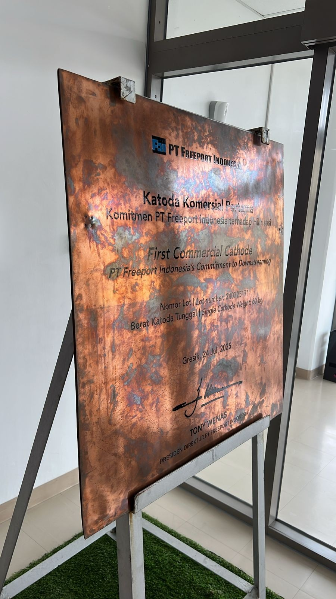
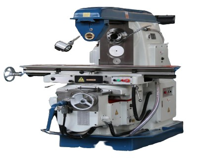
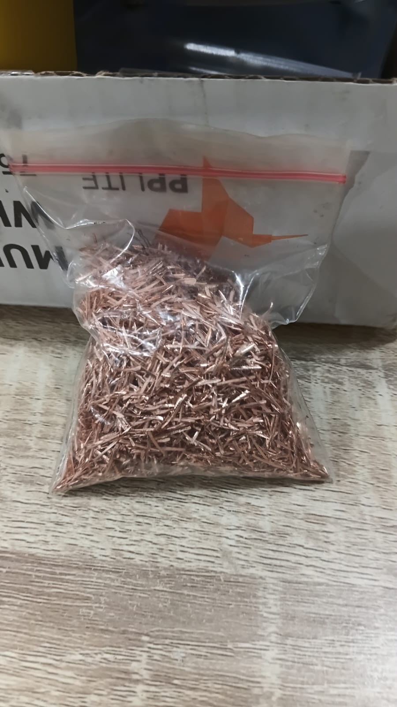
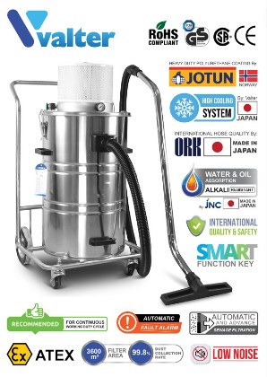
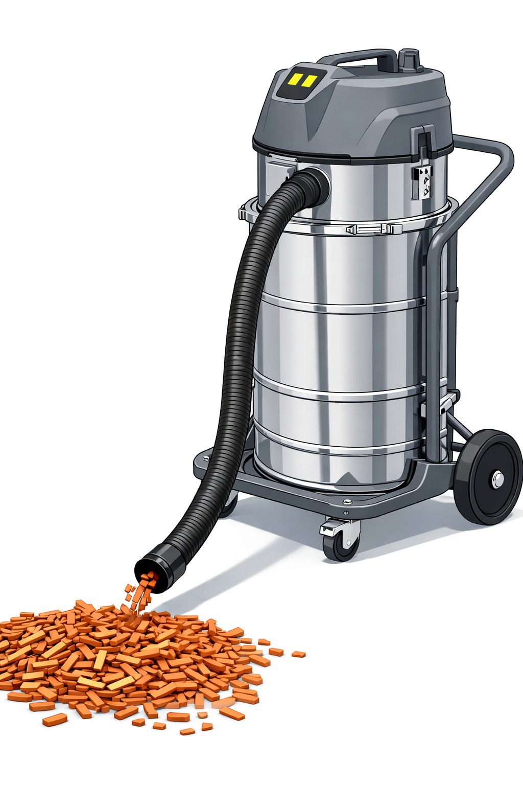

PTFI Copper Chip Milling System
Engineered the full tender documentation package: method statements, technical specifications, equipment BOQ, floor plan layouts, project schedule and K3/HSE plan, securing contract award at PT Freeport Indonesia. Led the client technical presentation and coordinated multi-vendor procurement against a Gantt-based master schedule.
Project Overview
Background / Problem Statement
PT Freeport Indonesia opened a tender for a copper chip milling system, requiring a technically sound, K3/HSE-compliant proposal covering equipment selection, floor plan layout, and project execution methodology. PT Aldzama needed a complete, defensible tender package to compete for and win the award.
Project Objectives
Secure the contract award by producing complete, standards-compliant tender documentation, present a credible commissioning and safety methodology to the client, and set up a procurement and schedule structure that keeps delivery on the critical path.
Main Idea / System Concept
A single, coherent tender package — method statements, technical specifications, equipment BOQ, floor plan layouts, project schedule, and K3/HSE plan — built around PTFI's safety management system standards, then defended directly to the client in a formal technical presentation.
Application / Use Case
Copper chip milling system installation and operation at a PT Freeport Indonesia production site, from tendering through equipment procurement and commissioning.
Technical Details
The engineering package moves from client requirements to an awarded, executable contract: scope and specifications are translated into a floor plan and equipment list, priced and scheduled, then defended to the client before procurement begins.
Deliverables
- Item Method statements & technical specifications
- Item Equipment BOQ & floor plan layouts
- Item Project schedule (Gantt) & K3/HSE plan
K3/HSE Documentation
- Item JSA & HIRADC
- Item Permit-to-Work procedures
- Item Emergency Response Plan
Tools Used
Workflow Explanation
Scope & requirement review
Reviewed PTFI's tender scope and technical requirements to define the equipment, layout, and safety framework needed for the milling system.
Tender documentation
Authored the method statements, technical specifications, equipment BOQ, floor plan layouts, project schedule, and K3/HSE plan to full PTFI safety management system standards.
Client technical presentation
Presented project scope, commissioning methodology, K3 compliance framework, and equipment selection rationale directly to the client, securing the contract award.
Procurement & scheduling
Coordinated multi-vendor equipment procurement against a Gantt-based master schedule, aligning delivery timelines with the critical path to prevent slippage.
Client Requirement & Raw Material
PTFI supplies off-grade copper cathode — material that does not pass LME Grade A standards — for conversion into copper chips used as internal feedstock for the Cu₂Te reactor at the Manyar Smelter, Electro Refinery Area, Gresik.

Raw Material Specification
- Material Off-grade copper cathode sheet (ER & EW routes)
- Dimensions 1 m × 1 m, thickness approx. 5–7 mm
- Weight 55–60 kg per sheet
- Source Manyar Smelter — Electro Refinery Area, Gresik
Final Chip Dimensional Spec
- Length Max. 15 mm (trial actual: 7 mm)
- Width Max. 5 mm (trial actual: 1 mm)
- Thickness Max. 1 mm (trial actual: 1 mm)
- KPI ≥95% dimensional spec compliance | ≥90% chip geometry compliance
Production Target
- Yearly 90 ton
- Monthly (KPI) Approx. 10 ton, min. 7,500 kg
- Daily Approx. 340.1 kg
- Hourly Approx. 56 kg
Machine & Equipment Specification
Two Sigma X6132 horizontal milling machines — one per shift — form the core of the proposed solution, sized so cutting load, spindle speed and dimensional control all sit comfortably inside the machine's rated capability.

Sigma X6132 Milling Machine
- Motor 7.5 kW — actual cutting load only ~0.047 kW (≈0.6% load) on soft copper cathode
- Spindle 30–1,500 RPM — operating at 955 RPM (≈64% of max), no modification needed
- Cutter Ø31 mm HSS M42 Cobalt 8% TiCN-coated, 2-flute end mill, ISO50 holder
- Feed Automatic feed, 458 mm/min, for consistent & uniform chip output
- Maintenance Preventive service every 500 hours, scheduled on the idle shift — zero planned production downtime
Major Equipment Deployed
- Machines 2× Sigma X6132 milling machine, 1 per shift
- Vacuum 1× VALTER pneumatic industrial vacuum, explosion-proof
- Tooling 2× ISO50 end mill holder Ø32 mm
- Foundation 2× concrete footing, 3 m × 2.2 m × 0.6 m per machine
- Electrical 200 m NYY 4×6 mm² cable + 4× panel/switchgear to PTFI's 3-phase supply
Consumables & Spare Parts (24-Month Scope)
- Cutting tools 400 units HSS M42 Co 8% TiCN Ø31 mm end mill
- Lubricants Vactra No.2 way lube, Mobilux EP2 grease, ISO 32 pneumatic oil
- Coolant Soluble oil coolant (water-miscible emulsion)
- Packaging 3,500 PP woven jumbo bags
- Spares Bronze lead screw nuts, friction plates, motor coil & brush cores, table slider, hardware spares
Dimensional Control — Three Independent Mechanisms
Machining Process Flow
Four sheets are stacked, clamped and side-milled edge to edge in a single simultaneous pass, then chips are collected, weighed and packed for transfer to PTFI's Cu₂Te reactor feed area.
Loading & inspection
Copper cathode sheets delivered by PTFI's forklift, checked for nodules or imperfections; nodules are chipped off with a pneumatic air breaker before use.
Stacking & clamping
4 sheets stacked to a 28 mm total height and secured firmly with C-clamps on the milling table — proper clamping prevents dimensional deviation and tool damage.
Cutter positioning & feed pass
Ø31 mm end mill positioned at the stack edge, radial depth engagement set and locked by the depth stop; automatic feed at 458 mm/min drives the stack through the rotating cutter at 955 RPM, all 4 plates cut simultaneously.
Progressive passes & batch changeover
Depth advances 1–4 mm per pass across the full 1 m plate width (~1,000 passes/batch, serviced simultaneously across all 4 plates); full batch changeover takes about 15–17 minutes.
Collection, bagging & vacuum recovery
Chips swept from table and chute into pre-weighed PP jumbo bags as a real-time production checkpoint; residual chips and fine dust in crevices and floor joints are cleared with the VALTER HEPA vacuum unit.
Production Throughput
- Batch cycle ≈60 min (incl. 15–17 min changeover) yielding ≈215 kg
- Per shift ≈1,500 kg (7 batches over 8 hours)
- System capacity ≈3,000 kg/day across 2 machines on 2 shifts
- KPI buffer System capacity comfortably clears the 340 kg/day, 10-ton/month target
Trial Verification
- Trial result 7 mm (L) × 1 mm (W) × 1 mm (T) — within all 3 dimensional limits
- Method Edge-to-edge side milling — chip length equals plate thickness by cut geometry, not operator adjustment
- Surface area Trial chip geometry gives a higher surface-area-to-mass ratio than PTFI's maximum allowed dimensions, benefiting Cu₂Te reaction efficiency


Aldzama Copper Chipping Plant — General Layout
Five working zones arranged in a one-way flow — material enters from the staging side and finished chips leave from the opposite end, with no crossing traffic in between.
Zone Arrangement
- Staging Raw material staging adjacent to the machine loading side, minimizing forklift travel
- Machine zone 2× X6132 units, ≥1 m clearance on all sides for operation and maintenance
- Forklift lane Physically separated from the machine zone by a flexible polymer tube rail barrier
- Storage Chip storage at the opposite end from raw material intake — one-way flow
- Vacuum Positioned centrally between the two machines to reach both without relocating
Scope Split — Aldzama vs. PTFI
- Aldzama Manpower (2 shifts: 06.00–14.00 / 14.00–22.00), 2 milling machines, 1 vacuum, PPE, consumables, spare parts, reporting & KPI tracking
- PTFI Site access, 3-phase power supply, workshop building, forklift/crane support, raw material supply, safety induction
- Safety Emergency exit paths kept at min. 1.5 m width per PTFI STD-4.09, never used for storage
Safety Aspects (K3/HSE)
HIRADC prepared on PTFI form FRM-2.02-PTFI-001, with controls following the hierarchy of controls: Elimination → Substitution → Engineering Control → Administrative → PPE.

Top Hazards Identified (FRM-2.02-PTFI-001)
- Copper dust Severity 2 / Likelihood 4 — dual HEPA vacuum + P100 respirator, periodic air monitoring
- Machine noise >85 dB(A) Kepmenaker KEP-51/MEN/1999 — NRR-25 earplugs mandatory, periodic audiometric testing
- Rotating cutter Severity 4 — machine guard + LOTO before maintenance, impact gloves, buddy system (no solo operation)
- Electrical short circuit Severity 3 / Likelihood 2 — daily electrical inspection, APAR at workstation
PPE Matrix (PTFI STD-4.01.30)
- Head/Eyes MSA v-Gard® helmet, 3M GG501SGAF anti-fog goggles
- Respiratory 3M 6501/02/03QL half-face respirator, P100 + acid gas cartridge 60927
- Hearing Allsafe reusable corded earplug, NRR 25 dB
- Hands Ansell EDGE 48-126 general glove + Ansell RINGERS® R085 impact glove
- Body/Feet Firegap 100% cotton FR coverall (NFPA 2112-2023); Aetos/KRUSHER safety shoes, 300°C heat resistant
Emergency Response & HSE Communication
- Muster point Open area outside the Process Plant, min. 30 m from hazard zone, per PTFI's established evacuation routes
- ERP scope Fire, chemical spill, machine entrapment, medical, forklift collision — min. 1 drill/year (STD-4.09, STD-3.08)
- Pre-work Work Permit + JSA review + P2H inspection before every shift
- Cadence Daily Toolbox Meeting, weekly PTFI HSE meeting, monthly management walkthrough
- Occupational health MCU initial & annual, micro-break/stretching routine, ergonomic guidance (STD-4.02)
Preparation Schedule & Commercial Structure
Concrete foundation curing and machine delivery set the critical path from contract award to first production; commissioning test cuts verify chip dimensions before the contract start date.
Preparation Timeline
- Critical path Concrete foundation curing (~3–4 weeks) and machine delivery, both initiated on contract-award day
- Parallel track Consumables/spares procurement, personnel certification and PTFI safety induction, electrical infrastructure installation
- Commissioning Test cuts on actual cathode material; dimensions verified before declaring the line production-ready
- Contract term 24 months, S-curve production plan tracked against the ~10-ton monthly KPI
Commercial Structure
- Pricing model Monthly copper chip milling service, priced per kg with a 7,500 kg/month minimum charge
- Pass-through items Annual MCU charge for all personnel
- One-time item Site establishment and mobilization/demobilization of equipment
- Cash flow Structured for stable monthly billing across the full 24-month term, with THR provision and an inflation buffer built into the pricing so the rate holds without renegotiation
Exact commercial figures are part of PT Aldzama's client-facing tender package and are omitted here out of commercial confidentiality — available on request.
This project involves client-confidential tender and site documentation. Full method statements, BOQ, schedules and K3/HSE plans are available on request.
Request DocumentationProject Gallery
Raw material, machine, layout and trial-result references from the PTFI Copper Chip Fabricator Machine kickoff proposal.
Results & Outcomes
Achievements
Tender documentation package accepted by PT Freeport Indonesia, securing contract award for the Copper Chip Milling System project.
Client Presentation
Led the formal technical presentation covering project scope, commissioning methodology, K3 compliance framework, and equipment selection rationale.
Schedule & Procurement
Multi-vendor procurement coordinated against a Gantt-based master schedule to keep delivery aligned with the critical path.
Status
Project engineering and commissioning support ongoing as of this writing.
Trial-Verified Solution
Machining trial confirmed 7 × 1 × 1 mm chip output — well inside PTFI's 15 × 5 × 1 mm limit — before the proposal was submitted, de-risking the technical case presented to the client.
Full-Scope Engineering Package
Delivered an integrated package spanning raw material analysis, machine & equipment specification, process flow, plant layout, K3/HSE (HIRADC, PPE matrix, ERP), preparation schedule and commercial structure for a 24-month, 90-ton/year contract.